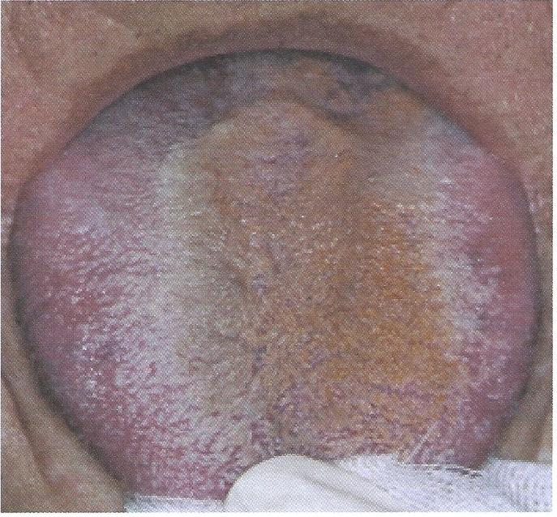

Coated Tongue

ลิ้นฝ้า
เป็นฝ้าสีขาวปนเหลืองปกคลุมด้านบนของลิ้น ไม่มีอาการใด ๆ ขูดออกได้ เกิดจากการทำความสะอาดลิ้นไม่ดี มีการสะสมของเชื้อแบคทีเรีย เกิดกลิ่นปาก อาจพบในผู้ที่หายใจทางปาก มีไข้ ขาดน้ำ
การรักษาโดยการแปรงลิ้นจากโคนลิ้นมาปลายลิ้น